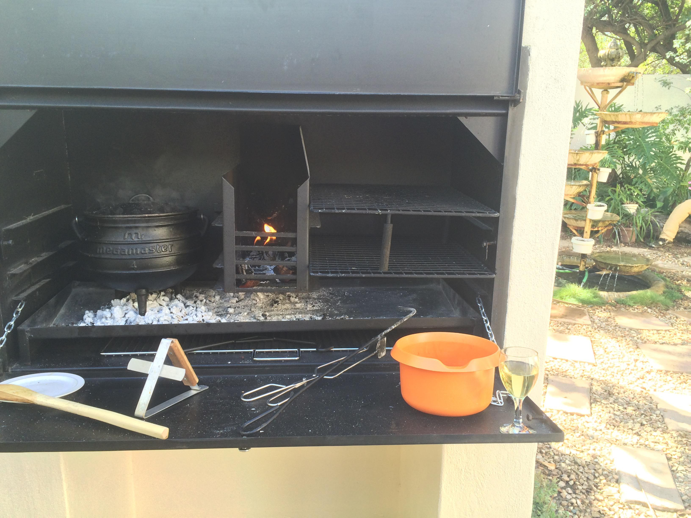

Tag 13 – Mehr Familie
By Evita Bley
Heute ist Sonntag und es gibt wieder Familie. Sewis Eltern haben zum Essen eingeladen. Allzu viel Privates will ich hier heute gar nicht schreiben, in den nächsten Tagen kommen noch ausführliche Berichte, wo es dann hauptsächlich um Martin und mich und unsere Erlebnisse geht. Also heute nur der kurze Eintrag zum Familientag. Wir brechen auf und sind gespannt, was uns erwartet, Jeanines Eltern haben wir ja direkt zu Beginn des Urlaubs kennengelernt und sie sind großartig. Sewis Eltern wohnen in einem wunderschönen Haus mit herrlichem Garten.
Außerdem gibt es jede Menge Tiere, sowohl in lebend als später auch auf dem Teller. :D Hier eine Auswahl der Lebendigen. Zwei unfassbar coole Hunde, von dem sich einer vor kurzem ein Bein gebrochen hat und denselben nochmal in kleiner. Martin ist jetzt nicht so hundebegeistert, um nicht zu sagen, dass er ziemlich viel Respekt hat vor Hunden. Aber siehe da, nach ein wenig Eingewöhnungszeit kommen sich der Kleine und Martin näher und es wird eine tiefe Freundschaft … Also Martin streichelt den Hund und wird von diesem nicht aufgefressen. Das Eis ist wohl gebrochen und vielleicht wird ja nochmal ein Therapiehund aus dem Racker.
Noch cooler ist allerdings der Papagei von Sewis kleinem Bruder. Der sitzt da so in seinem Käfig und plappert vor sich hin. Ab und zu etwas lauter, aber ist halt ein Vogel, da kann man wohl nichts machen. Auf jeden Fall ist er handzahm und so wird er aus dem Käfig gelassen, was bei näherer Betrachtung in meinen Augen zwar super ist, aber so ein Meter Abstand ist schon knapp genug, näher muss nicht sein. Dina ist aber auch ein Cleverle, sie kann mit ihrem Schnabel einfach mal eben die normalen Verschlüsse des Käfigs öffnen. Als dies bemerkt wurde, mussten dann doch Vorhängeschlösser her, damit Dina nicht ausbüchst. Ich habe auf Video, wie sie es schafft, also ist nicht geflunkert.

Nach all dem Tierzeugs und ein paar netten Gesprächen geht es nun zum Essen. Eine große Tafel für 9 Leute wird hergerichtet und der „Potjie“ (wir würden vermutlich Eintopf sagen) wird nach Stunden vom Feuer genommen, besser gesagt von der Glut. Der Draußenofen ist mächtig groß und für Braais vermutlich genauso gut geeignet wie fürs heutige Essen. Es gab also diesen Eintopf und dazu Reis. Ich habe das auch gegessen, also muss es gut gewesen sein! Zum Nachtisch gab es „Schokoladenpudding“ und ich dachte erst, iiiih Schokozeug, das mag ich nicht, aber Plan für diesen Urlaub war ja, alles wird probiert und dann wird gemeckert oder verschmäht. Also probiere ich auch das und es war großartig! Boah war das gut :D
Nach ein bisschen Fresskoma und weiteren Gesprächen geht es wieder heim. Was ich sagen kann ist, diese Familie ist zwar völlig anders als Jeanines, aber genauso großartig und sympathisch. Danke, dass wir die Gelegenheit hatten, diese tollen Menschen kennenzulernen!
Wie gesagt, morgen geht es weiter mit etwas größeren Erlebnissen. Wir fahren weg und zwar weit weg … Ich sage nur ein paar Stichworte: Wellen, Tiere, Berge, Höhlen und und und.